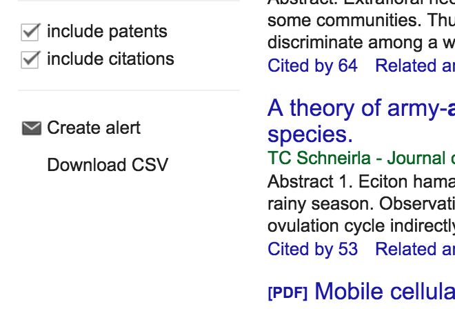

If you're using Chrome install Tampermonkey.
If you're using Firefox install Greasemonkey.
Then install the google scholar userscript.
Now try out a search. You should see a new link on the bottom left, like the screenshot below.
